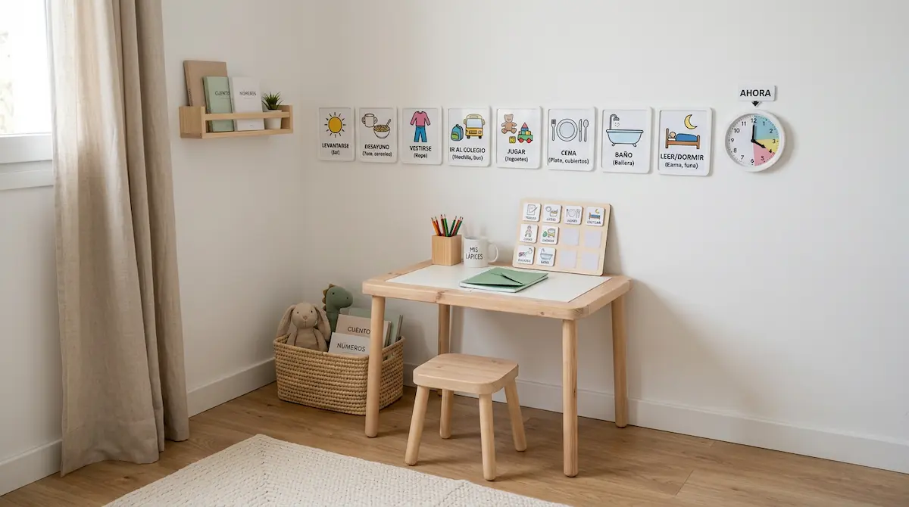

Estructurar el espacio y la calma: rutinas que aportan seguridad
Para un niño o niña en el espectro autista, el mundo puede parecer a menudo un lugar imprevisto y caótico. Las sorpresas o las transiciones repentinas entre actividades generan un nivel de estrés elevado. Diseñar un entorno doméstico organizado y predecible no busca imponer rigidez, sino ofrecer una estructura clara que aporte seguridad emocional y tranquilidad en el día a día.
La predictibilidad como fuente de paz
Saber qué va a ocurrir a continuación permite al menor anticipar los cambios y preparar su mente para la siguiente actividad. Cuando el entorno es claro, la ansiedad disminuye de forma notable, lo que facilita la colaboración cotidiana y reduce las situaciones de frustración o saturación emocional.
"Para una mente que procesa la realidad de forma distinta, la rutina no es monotonía, sino el mapa que le guía para moverse con libertad y tranquilidad."
Claves para organizar el entorno y el tiempo
Estructurar el hogar resulta muy sencillo si aplicamos apoyos prácticos adaptados a sus necesidades:
1. Agendas visuales y anticipación: Utilizar pictogramas o secuencias con imágenes para mostrar la rutina diaria (desayunar, vestirse, ir al colegio, jugar) ayuda a comprender la secuencia del día sin necesidad de repetir instrucciones verbales constantes.
2. Un rincón de autorregulación: Delimitar un espacio tranquilo en casa, libre de ruidos intensos o luces brillantes, donde el niño sepa que puede acudir de forma voluntaria a descansar cuando sienta que el entorno le sobrecarga.
Flexibilidad dentro de la estructura
Construir rutinas sólidas no significa bloquear la posibilidad de adaptar el día. Se trata de introducir los pequeños cambios de forma gradual y anticipada, enseñando al menor a gestionar imprevistos desde un entorno de total confianza. Con un hogar estructurado y sereno, la convivencia fluye con paz y comprensión mutua.
➔ Volver al índice de Autismo (TEA)